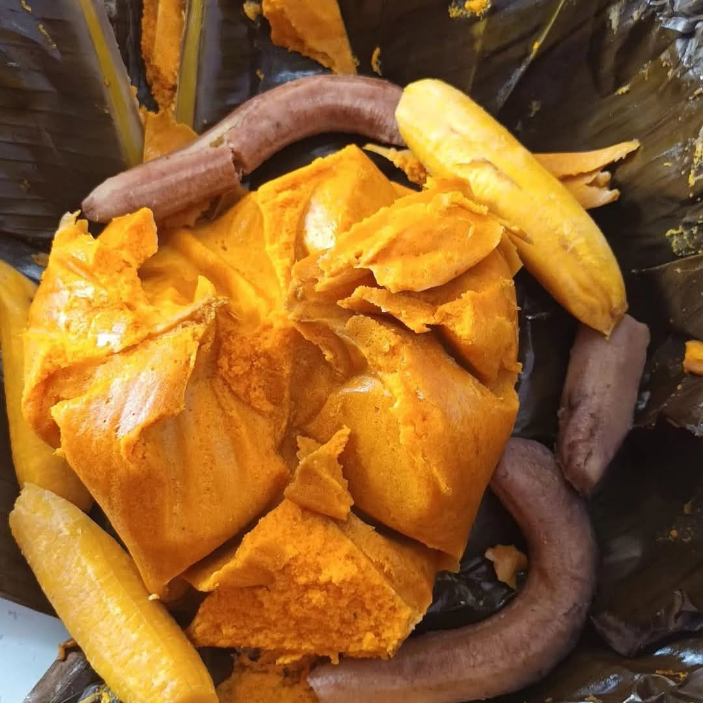

Home
Koki

Desrciption
Koki is a traditional Cameroonian dish from the Littoral and West regions, made from ground black-eyed peas (called niébé or cowpeas) blended with red palm oil, peppers and spices. The smooth, golden mixture is wrapped in banana leaves and steamed until it turns soft, rich and slightly spongy. It is served with ripe plantains, boiled or fried, whose natural sweetness balances the earthy, savory koki. It is a favorite for family meals, markets and celebrations.
Serves 4 to 6 · Prep: 30 min (plus overnight soaking) · Cooking: 1 hour 15 min
Ingredients
The Koki:
- 500 g dried black-eyed peas
- 150 ml red palm oil
- 1 small onion
- 2 garlic cloves
- 1 chili pepper (to taste)
- 1 tbsp ground crayfish (optional)
- 1 stock cube, salt
- 1 handful of chopped spinach or ndolé leaves (optional, for a green koki)
- Banana leaves (or aluminum foil in a pinch)
The side:
- 4 ripe plantains (yellow with black spots)
- Oil for frying
Steps
- Soak the beans: cover the black-eyed peas with water and leave overnight.
- Peel the beans: rub the soaked beans between your hands to remove the skins, then rinse until the water runs clear. Drain well.
- Blend: grind the beans with the onion, garlic, chili and a few spoonfuls of water into a thick, smooth paste. It should hold its shape, not be runny.
- Season: mix in the stock cube, salt, crayfish and chopped greens if using. Gradually stir in the palm oil until the paste is evenly golden.
- Prepare the leaves: pass the banana leaves briefly over a flame or dip them in hot water to make them flexible, then cut them into large squares.
- Wrap: spoon some paste into the center of each leaf. Fold into a neat, sealed parcel and tie with string if needed.
- Steam: arrange the parcels in a large pot with a little water and a layer of leaves underneath. Cover and steam for 1 hour to 1 hour 15 minutes, until firm. Add water as needed so it does not dry out.
- Cook the plantains: boil them in their skins for 15 to 20 minutes, or peel, slice and fry in hot oil until golden.
- Serve: unwrap the koki and serve it warm with the plantains.